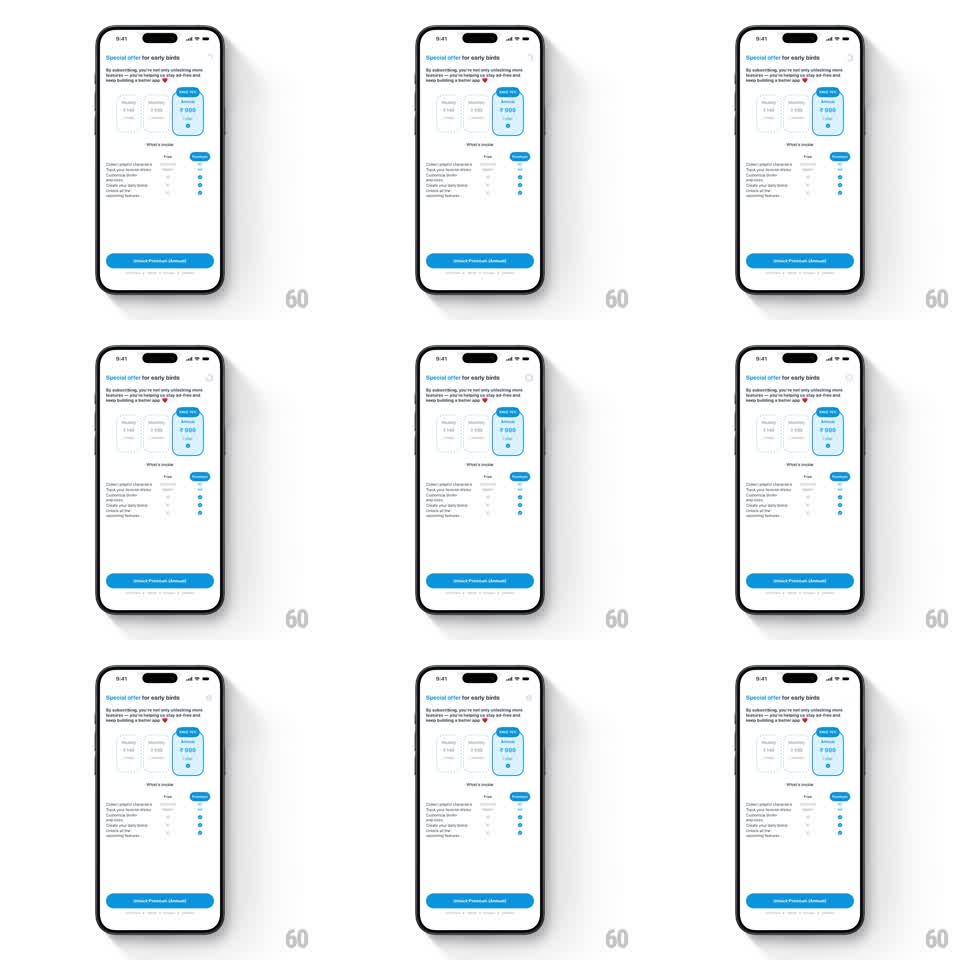

Media
Frame-by-frame

Rebuild this interaction 1:1: Liquid Cats' paywall dismissal - tapping the close (x) on the "Special offer for early birds" sheet slides it away and reveals the main dashboard, where the cat-shaped container immediately fills with liquid to the current progress level.

Rebuild this interaction 1:1: Liquid Cats' paywall dismissal - tapping the close (x) on the "Special offer for early birds" sheet slides it away and reveals the main dashboard, where the cat-shaped container immediately fills with liquid to the current progress level. ## Integration Integration: stack-agnostic spec - springs given as stiffness/damping, timed motions as duration + curve; map every value to your framework and animation library of choice. ## Scene Light paywall: "Special offer for early birds" header with subcopy and a close (x) top-right, three plan cards (Monthly ₹160, 6 Months ₹550, Annual ₹999 with a "Save 45%" badge - Annual highlighted with a blue border and radio), a "What's inside" Free-vs-Premium comparison list with blue checks, and a full-width blue "Unlock Premium (Annual)" button. Behind it: the dashboard with the cat container and drink rows. ## Motion spec Pattern: sheet dismiss + staged progress fill, ~1.2s. - Close: tapping (x) scales the button briefly (0.9 -> 1, 120ms), then the paywall slides down and fades (300ms, ease-in) as the dashboard fades up from 90% opacity. - Reveal fill: once the dashboard is visible, liquid pours into the cat container from empty to the saved level (700ms, ease-out) with the signature decaying wave slosh (amplitude 6px -> 0 over 900ms). - Counter: the "ml left" readout counts down in sync with the rising level (600ms). ## Calibration - The fill starts only after the paywall is fully gone - the reveal is the reward. - Annual stays the pre-selected plan while the paywall is up; no plan-switch motion in this flow. ## Reduced motion Paywall cross-fades out (200ms); liquid steps to its level with a 250ms fade. ## Don't miss - Prices in rupees with the Save 45% badge on the Annual card. - The cat fill uses the same sloshing wave language as the rest of the app.